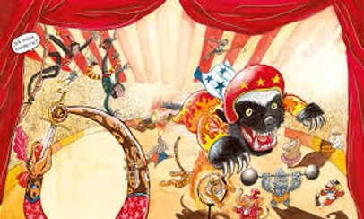

The Animals' Circus

For Claudia Mazzei that friend of animals extraordinaire
Townsfolk nodded when they heard the circus was coming to town. They knew all about circuses though they'd never seen one and couldn't recall any ever coming to town. Maybe they'd forgotten since there was so much to remember. If after a what-ever-next smirk, their attention held, they saw elephants shitting in public, bare flesh in tights on a high wire and, always, clowns. Nobody intended to go to the circus. Kids weren't interested in passé stuff. They were busy with their tiny screens. They refused to watch TV with their parents, so why, out here in the sticks where nothing could happen, would they agree to go to a live—live?—circus that couldn't possibly measure up to even a dead hour's viewing? As for grownups, they rarely stirred from home after work unless the exercising kind that jogged or paid money at the gym to get thin. On days off, time passed over them like the metal-flavoured breeze of the air conditioning.
But no blasé kid or past-it adult could ignore the poster pasted up downtown. They took it in when stalled at the red light or running it with their bike. The outsized face in a ruffle collar didn't look like a clown. You needn't have been to a circus to know that clowns were either stupid-funny or else funny-sad. This one had a beak on him like a bird of prey. There was no sidekick to tease him over his big nose. He'd never been to Clown College. His face, not stupid, sad nor funny, had a ring of animals sketched around it. A strange mix, they were hard to give names to. You had to take the word of the big face that they were circus animals of the performing sort.
Like all posters this one went stale. It was always the same and people expected publicity to change, to progress. Nothing had been pasted over it, but the weather turned the heavy paper into something that looked like the relic of something else. The event had been the poster, not the circus. No one asked how that kept operating or if, in fact, it did. It was assumed yokels from the backcountry had filled the seats for a while. No one knew anyone who'd gone to the circus.
Only one person in town took the poster for much more than a municipal blemish. That was Ben, an old man known for just that, being old and reaching great age without total loss of his powers of speech, sight, hearing or mobility. He was so old that calling him old Ben was a gross understatement. No one knew how he had passed his other life, before his life as a really old man began. It was doubtful that even he recalled those days since he never breathed an old timer's word about them. Townsfolk liked his being around as it reassured them about their own longevity. At the same time they found him arrogant for staying forever. Some of them foresaw his downfall with pleasure and said to themselves, Just wait.
At the time the poster could still be made out, Ben opened up about his past. He took a running jump over his middle years and landed chattily in his childhood. Those who heard him feared that he was hallucinating and told themselves he'd entered the zone of vibrant energy that precedes the demise of the very old. It was natural that Ben didn't share their point of view. The poster had awakened a flow of reminiscence in him of the circus of his childhood. The subject soon became what some, not Ben, called his obsession. There were even beleaguered town wives who pitied his for having to listen. Cleo, old too but decades short of Ben, still had her hearing.
If a circus ever had come to town it hadn't been in the last century. With no one to dispute his memories, they were attributed to Ben's doddering invention. Loyal Cleo praised him for still remembering how to tell a coherent lie. When he came up with the idea of attending the circus, she didn't say no. She even went along with his insistence on taking a party of children with them. Ben had never been one for kids or pets but now wanted everyone to have the same faux memories he had. Townsfolk were not unmoved for thirty seconds or so when they heard him on this theme. They didn't think of circuses or kids, but calculated their chances of scoring more years than Ben.
In fact the circus barely entered the minds of the townsfolk. Like the fading poster, it was there but after a while unnoticed. People hardly connected it with one of the half-dozen circus hands they saw on the town streets. These were no longer feared by the citizens as outsiders and possible roustabouts. They had proven to be polite and diffident. They spent money. No one gave them more than a passing thought until the organisation of the outing brought them and the circus back into small talk.
Logistics were in the gnarled hands of a rejuvenated Clio and a whole busload of kids embarked under the whitened eye of an exultant Ben. Clio, as a grandmother figure still self-propelled and almost all there won parental confidence. The venue was a former sports arena beyond the town limits. Most people hardly knew it still existed. Something lurid had happened there years before involving a berserk accountant with an antique pistol. But the crime, if that's what it was, had been pretty well forgotten as more up-to-date shootings around the country had shown it up as petty and provincial.
It was easy getting the kids out of the bus and on to the bleacher seats. They couldn't wait to sneer at their first circus and talk it down. The bus driver hung around sucking on cigarettes to stay awake. He wouldn't prove much of a witness, but there would be no other.
Ben sat in the bottom row. His joints refused a climb. His smile grew as it probed every corner of the arena and bumped against the roof that he called the bigtop although it wasn't canvas but corrugated iron and rusty. Clio made it to the highest bleacher seats and had her pad and pencil out counting kids' heads.
Ben trembled with surprise when the moment came for the trumpet to sound the start. Original idea, he thought, to use that long howl of a wolf instead. In the spotlight the maestro in his high boots lifted his whip. Ben recognised his beak from the poster and understood he was doing a double act, clown and whip-cracking ringmaster.
The helpers came on. Ben thought that this always happened to quick march music as they strutted into place. But the tune now was cheerless and this lot tried to be invisible, moving like weary wraiths into a lazy circle around the maestro who had begun to make his whip snap. There wasn't time for applause before an ohhh of surprise crept down from the top of the bleachers. A bobbing troop came out to music that barked and cawed. Mimed animals, thought Ben, a novel touch. What will they think of next? The figures, whatever they were, took up positions, one behind each helper who now revealed chains attached to their ankles above bare feet.
The whip cracked over what looked like a diminutive donkey. It answered with a bow, bending its front legs. Another crack and it lifted shod hoofs catching its helper's head between them. It was not a caress and could have crushed the man's skull. A drumbeat started.
Again the whip cracked, this time over what looked like an overgrown tomcat. The drumming seemed to wake it up. Its paws gripped the helper before it, one on each shoulder cap. The man gave a shrug of pain as the claws dug in.
Ben was uneasy. He didn't invent all this drum beating. The pretend animals were all very well, maybe. We do have to go with the times. But he missed the good-natured elephants that didn't mind being prodded with a hooked pole. He would have liked to laugh again at the giraffe with florescent tube necklace. He felt these attendants struck the wrong note. Now he saw that the chain on their ankles kept them in place.
The tomcat creature was no longer sleepy. It let out a gash of a screech echoed off stage by the howl of the wolf that had opened the show. The snapping whip moved on and cracked over what looked like a big chow dog. Was it going to lick its helper's forehead? No, it withdrew its tongue and showed its teeth the way dogs do when ready for trouble.
The drum had got to the kids. Some covered their ears. A few had burst into tears. Clio, not so spry as she was imagined, tried to get to the most distressed and smile them back to a circus-time mood. She was too busy to watch the show.
The chow dog nipped at its helper's neck, not full bites but enough to make the man open his mouth wide in a soundless cry. Ben thought the chow was all wrong. He remembered a little parade of dachshunds all dressed up like soldiers and balancing balls that were tiny bombs on their noses—but fairytale like, nothing deafening when they exploded. The mutts would then run off stage to be cleaned up and, Ben was sure, given a bone-shaped biscuit.
The kids didn't like chow dogs. They probably had met a nasty one in the street. They looked away and sought Clio up in the bleachers. She was busy simply getting around, placing one foot before the other on the narrow walkways. In her croaky voice she told as many of the kids as could hear her, not to mind. The carriage full of clowns would soon drive into the ring. Ben had told her about the trick of getting an impossible number of clowns into a tiny carriage pulled by a white circus-horse with a pulpy girl astride flashing huge spurs.
Something had been going on with a black crow as tall as a broom stick. It pecked at its helper from his ankles to the nape of his neck. At first the man seemed to be squirming in a game of tickles. Then his body shook and he raised his hands to protect his eyes. Ben remembered the dyspeptic crow fastened to its perch that picked a fortune card from a pile at his master's command. Predictions were always for fine weather and good times.
The drumbeat gave way to one saxophone grinding on another as the ring was swept clear. In a screech of metal the full carriage came on. It wasn't stuffed with clowns but packed with helpers visible through the glazed sides. No white horse pulled it. The helpers bare feet reached the pavement beneath and propelled it like so many paddles.
Ben didn't like that at all. There used to be a thrill of delight when the occupants piled out, one after another, cymbals ringing, as the ringmaster counted into his megaphone from one to twenty-five in a rising voice. It was the moment Ben had loved best as a boy. After the twenty-fifth appeared there was a pause, the music peaking, and a little fox terrier would prance out, dazed, a top hat pinned to its ears.
Clio had got back to her seat high up. As the responsible adult she kept her eyes on the rows of kids, waving at them to sit when they stood. Now she fussed with her pad again. She wanted to have something to say about the children's behaviour when talking to their parents afterward. The kids fixed eyes on the ring below and uttered a collective awww under their breath.
An orangutang stood up on the roof of the carriage. The drum started again, battering the silence. The beast bent forward letting its rump loom large, turning it in a slow circle as the two saxes gave loud, dull explosions. Stunned silence came from the bleachers when the shaggy form stood up straight and the drum went wild. From the folds of fur beneath its midriff a huge organ poked out and grew. It was multicoloured, purple and pink predominating. The ape moved faster, turning again in a circle. The drumming stopped, the kids sucked in their breath, eyes glued, as the animal sent a virile jet of urine on to the helpers below as if it was putting out a fire.
The confusion generated by the evening at the circus never ended. Clio did get the kids home. Wide-eyed and subdued, their reports to their parents could hardly not be a jumble. What in fact had happened? They didn't have the words to say more than, with a blush, that the big monkey had farted. When they went on to mention its thing, the size and colours of it, parents smiled and told them it was just being a monkey. Animals were like that, indecent.
Old Ben's last days were notable for his total absence of nostalgia. On the other hand, it couldn't be said that he was looking to the future. He had simply clammed up and wouldn't be drawn into talk. When pressed beyond endurance, he'd say, Don't you know I'm senile, which was mistaken for his last joke. Clio had been so busy shepherding the kids, she missed what had gone on in the ring and in time took to insisting that they made the bus trip in vain and that the circus had already moved on. She would point at the tattered poster, now washed out like an old rag-rug, and shrug her shoulders as if it were only a stain on the wall. The beaky face of the clown couldn't be made out. Finally the wall was torn down to make way for a supermarket that for some reason never got built. Time passed. Clio, still full of nervous energy and denial, died. Ben, in a hurry, followed her soon enough, if not to be with her, to be gone from a world that had no respect for his inventions.
The kids who had been to the circus grew up. Older and younger townsfolk agreed that they belonged to a special generation. It wasn't X generation, Y, or Z, but whatever came after the alphabet. They didn't especially like vegetables. However, you never met them in a butcher shop.